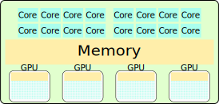

LLM Workshop - Introduction
Overview¶
- History of AI
- Compute and AI
- Ethics and concerns
- Introducing the workshop hardware
History of AI¶
- How has AI developed over time?
AI as a term is coined¶
We propose that a 2-month, 10-man study of artificial intelligence be carried out during the summer of 1956 at Dartmouth College in Hanover, New Hampshire. [...] An attempt will be made to find how to make machines use language, form abstractions and concepts, solve kinds of problems now reserved for humans, and improve themselves. We think that a significant advance can be made in one or more of these problems if a carefully selected group of scientists work on it together for a summer.
Early NLP – 1956-1966¶

- Rule based, lots of manual effort
- Lots of LISP
- Used for:
- Information retrieval
- Basic chat-bots e.g. Eliza
- Limited translation systems
AI Winter I – 1974-1980¶
- NLP Winter started even earlier

Statistical NLP – 1980s¶

- Using statistics of the corpus
- Bag-of-words, N-grams
AI Winter II – 1990s, early 2000s¶
- The word "AI" is not a buzzword
- Research continues under other names
Deep Learning – 2012-¶

- 2012: AlexNet has less than 25% error on ImageNet challenge
- 2017: Transformer architecture (Attention Is All You Need, retrospectic)
- 2019: GPT-2 released. Surprisingly good.
- 2020: GPT-3 released. Surprisingly still improving.
- 2022: ChatGPT (GPT-3.5) released. General public starts to take notice.
Deep Learning – Transformer architecture¶

Deep Learning – Attention mechanism¶
- Scaled Dot-Product Attention $$ \mathrm{Attention}(V, K, Q) = \mathrm{softmax}\left(\frac{QK^\top}{\sqrt{d_K}}\right)V $$
- Cross-attention: \(Q = X_\mathrm{dec} W_Q\), \(K = X_\mathrm{enc} W_K\) and \(V = X_\mathrm{enc} W_V\)
- Self-attention: Same \(X\) used for all matrices
- In decoder, self-attention masks future tokens
- Autoregressive unimodal LLMs usually decoder only
Compute and AI¶
- What has changed?
- The bitter lesson by Richard Sutton, 2019
The biggest lesson that can be read from 70 years of AI research is that general methods that leverage computation are ultimately the most effective, and by a large margin.
Compute use over time¶
- Compute, but also data, architecture and algorithms
Compute and performance¶
What was new with ChatGPT?¶
- Base models are pure language models
- Chat models are:
- Instruct tuned (supervised)
- Reinforcement Learning with Human Feedback
RLHF¶

- Enables RL when no clear scoring function available
- Relatively little human input needed
Further scaling¶
Ethics and issues¶
- Societal concerns
- Misuse concerns
- Misalignment concerns
Societal concerns¶
- Perpetuated bias
- Confident falsehood and sycophancy
- Copyright & IP issues
- Distribution of wealth and the job market
- E.g. GDPval benchmark
- Climate footprint
- Word for word comparisson, AI is cheaper
- But, AI can generate a lot more text (rel. Jevons paradox
Misuse concerns¶
- Mass spear phishing, disinformation campaigns, ...
- Cyberattacks
- Finding and exploiting vulnerabilities
- Enabling bad actors
Misalignment¶
- RLHF is only a step in the right direction
- Goodhart's law
- Misaligned leadership
- What future are they aiming for?
- Superintelligence
Introduction to the hardware for this workshop¶
- Main reference: Alvis introduction material
- Compute clusters
- GPUs as compute accelerator
- Multi-GPU
- Containers
- Batch queue system
Compute clusters¶

The compute node¶

- Speed-up by parallelization
- Feeding data to GPU memory (VRAM) often bottleneck
Software¶
- Default software environment intentionally sparse
- Use modules or containers to run software
- (Follow our recommendations when installing Python packages)
- We will use containers in this course
Software – containers¶
- Apptainer containers
- A single file for your software and all dependencies
- (Building containers)
- Running software in a container
SLURM¶
- Batch queueing system
- Allocates resources in a fair and effective manner
- Resources are finite so expect queue times occasionally
SLURM workflow – Preparing job¶

SLURM workflow – Submitting job to queue¶

SLURM workflow – Job starts¶
Partial command overview¶
- View queued and running jobs
squeue [--me] - View previous jobs
sacct - Submit jobs
sbatch <JOBSCRIPT> - Cancel queued or running jobs
scancel <JOBID> - More complete overview at SLURM documentation and Alvis intro
Summary of Introduction¶
- Compute a key component to the success of LLMs
- Use and development of AI is not without its issues
- The hardware you can access
- Containers for accessing software
- SLURM batch queue system for running things on the cluster
Excercise¶
- Finish prerequisites
- Navigate to your instance of
LLM-workshop - Do a
git pullto get the latest changes - Launch an interactive session through https://alvis.c3se.chalmers.se/
- Modify and then submit
LLM-workshop/excercises/introduction/hello-llms.shTODO